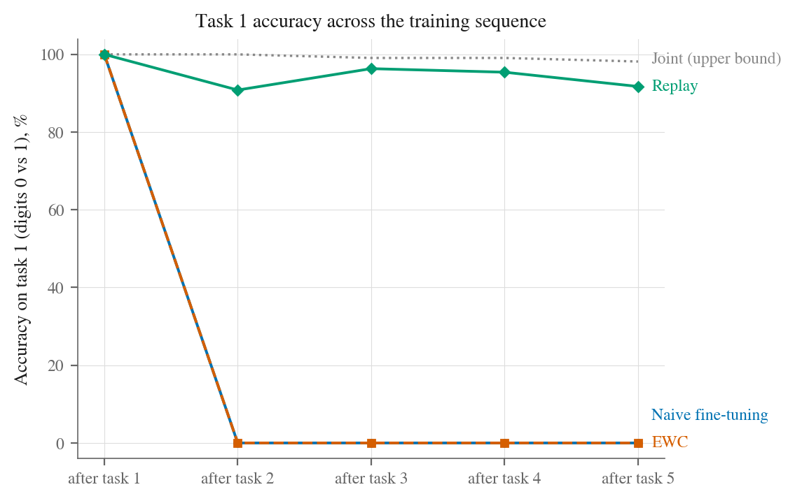
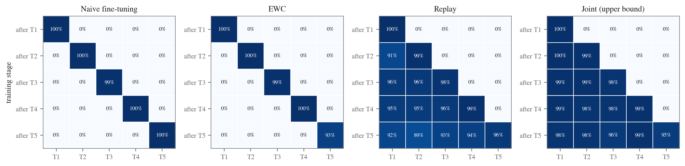

Continual learning: what it is, and what I've learned working with it
I came to write this while reviewing the final draft of my PhD student's thesis. Peter's PhD is on embedding frameworks for avionics health monitoring, and the models in it do their job well. But the data they describe spans decades, and the question I kept scribbling in the margins was one the thesis was never asked to answer: these models were trained once and evaluated once. What happens when a model has to live through those decades instead, learning as it goes? That question has a name, continual learning, and a paper trail going back fifty years. Peter and I are now writing a paper of our own in this area, so I have spent the past months living in that paper trail. This post is the map I wish someone had handed me at the start: what the problem is, which remedies to trust, how to read the literature without being misled, and a small experiment you can run yourself to make all of it concrete.
First, the plain definition. Continual learning is the problem of training a model on a stream of data it cannot freely revisit: new tasks, new classes, new distributions arriving over time, with the model expected to absorb them without losing what it already knows. Stated like that it sounds like an engineering detail. It is closer to a foundational open problem, because the standard training recipe for neural networks fails at it in a spectacular and well-documented way. That failure is where any honest account has to start.
1. The failure that started the field
In 1989, McCloskey and Cohen trained a small connectionist network to add ones (1+1, 1+2, and so on), then trained the same network to add twos. It learned the twos and, in the process, lost the ones almost entirely. They called the effect catastrophic interference [1], and Ratcliff confirmed it across a range of architectures the following year [2]. At the time this was an argument about psychology: connectionist networks were being proposed as models of human memory, and here they were forgetting arithmetic in a way no child does.
The mechanism is not mysterious, and I find it clarifies everything that follows. A network stores what it knows in shared weights, and gradient descent adjusts those weights to reduce the loss on whatever data it is currently shown. Once the old task's data is gone, nothing in the objective speaks for it. The same distributed representations that give networks their power to generalise are exactly what makes them vulnerable: every update that helps the new task moves weights the old task depended on. If you read one thing from the early literature, make it French's short review [3]: twenty minutes, no equations to speak of, and it settles why this trade-off is structural rather than a bug someone will eventually fix. Grossberg had already named the underlying tension in the 1980s, the stability-plasticity dilemma [4]: plastic enough to learn, stable enough to retain, and the two pull in opposite directions.
It is worth one more level of depth here, because the geometry pays off later. Two tasks interfere to the extent that they press on the same weights in opposite directions: an update helps the new task and harms an old one when the gradient it follows points against the old task's, when the dot product between the two tasks' gradients is negative. That one sentence contains half the field. French was already arguing in the 1990s that the fix is representations that overlap less, sparser and more localised codes [3], which is the architecture family of methods in embryo. And once you phrase interference as a bad dot product, you can imagine measuring it and refusing the update, which is precisely what Gradient Episodic Memory does two decades later [10]. Very little in this literature is new under the sun; mostly the ideas sat waiting for the compute.
Brains manage this trade-off, and the leading account of how has been unusually productive for our field. Complementary Learning Systems theory [5] proposes a division of labour: the hippocampus learns quickly from single episodes, and during rest and sleep it replays those episodes to the neocortex, which integrates them slowly, interleaved with existing knowledge. Interleaving is the load-bearing word. The neocortex is never asked to learn new material in a block, on its own, which is precisely the regime that breaks artificial networks. Keep that in mind for the remedies below, because the most effective of them is a direct imitation of it.
2. What counts as continual learning, and what does not
A continual learning problem has three ingredients: data arrives as a sequence whose distribution shifts over time; the learner cannot freely revisit everything it has seen (storage, privacy, licensing or scale forbid it); and it is judged on all of it, old and new, under a bounded memory and compute budget. The goals are to retain, to learn, and ideally to have the old and the new help each other rather than compete.
The terms around it get used loosely, so it is worth drawing the borders. Transfer learning is a single handoff: pretrain on A, fine-tune on B, and nobody checks performance on A afterwards. Domain adaptation handles one shift, not an open-ended sequence. Online learning shares the streaming setting but is classically judged on the current distribution, not on retention. And periodic retraining, the industrial default, sidesteps the problem entirely by keeping all the data and paying for a fresh model whenever drift bites. Continual learning is what you need when that sidestep is unavailable, and being clear-eyed about whether it actually is unavailable in your case is half the battle. I will come back to this in the checklist.
One more distinction does a great deal of work, and if you are new to the area I would learn it before reading any results at all. van de Ven and Tolias [6] noticed that "continual learning" experiments were being run under three quietly different protocols, and that results do not transfer between them: task-incremental, where the model is told at test time which task an input belongs to and can keep a separate output head per task; domain-incremental, where the classes stay fixed but the input distribution shifts under them; and class-incremental, where new classes keep arriving, there is one shared output layer, and no task label at test time. The first is the easiest and the third the hardest. Their paper is short and the taxonomy earns its keep every time I read a new result; the journal version [29] is the polished statement if you prefer one reference to hold on to. I would add an observation from my own recent experience: real streams rarely announce task boundaries at all. Drift arrives gradually and unlabelled, a regime the benchmarks barely touch, and you should notice when a paper's tidy task sequence looks nothing like your data.
3. The remedies, and which ones I trust
The three classic families are easiest to keep apart if you look at where each one intervenes in the training loop. Data arrives as a stream; whatever has already passed is gone, or nearly so; the model is updated on the current batch and, after every task, evaluated on everything seen so far. Each family defends a different part of that loop: one guards the weights, one smuggles the past into the batch, one gives new tasks somewhere else to live.
Regularisation: protect the weights that mattered
If forgetting happens because new gradients trample old weights, an obvious response is to slow the trampling down. Elastic Weight Consolidation [7] estimates, per weight, how much the old tasks care about it (via the diagonal of the Fisher information matrix) and anchors important weights near their old values with a quadratic penalty. The paper is worth reading whatever you build, for the way it connects the idea to synaptic consolidation in biology; just read it alongside the caveat coming in the demo. Synaptic Intelligence [8] computes a similar importance measure online, and Learning without Forgetting [9] reaches the same goal through distillation, penalising changes to the model's old outputs rather than its weights.
There is a clean way to see what EWC is really claiming, and it is the reason I still teach it even though I rarely deploy it: it is sequential Bayes, approximated. The posterior over weights after one task ought to become the prior for the next; EWC approximates that posterior with a Gaussian centred on the trained weights, with curvature estimated by the Fisher information, and the famous penalty simply falls out as the log of that prior. Every weakness of the method is visible from the same vantage point. The approximation is local, so it knows nothing about better basins elsewhere in weight space; the diagonal Fisher throws away correlations between weights, which is exactly where deep networks keep their redundancy; and stacking one quadratic penalty per task makes the model progressively stiffer until, many tasks in, it can barely learn at all. These methods are cheap, elegant, and need no stored data, which is why EWC became famous. Their honest report card is less flattering: helpful when each task keeps its own output head, largely ineffective in the class-incremental setting most deployments actually face. You will see exactly that below.
Replay: keep a little of the past
The second family does what the hippocampus does: it interleaves. Keep a small buffer of past examples and mix them into every new batch. This is experience replay, and if you take one practical recommendation from this post, it is that replay is where you start and the baseline any clever alternative must beat. My experience so far is consistent with the published record: it is embarrassingly hard to beat. Refinements worth knowing: Gradient Episodic Memory [10], which uses the buffer to forbid updates that would worsen past tasks and, along the way, gave the field its standard metrics (read its section 3 even if you never use the method); the cheaper A-GEM [11]; and Dark Experience Replay [12], which replays stored logits alongside labels and is the strongest simple baseline in recent comparisons. Where storing raw data is off the table, generative replay [13] trains a generator to produce pseudo-examples of the past instead, an idea lifted straight from the CLS account of dreaming.
Sit with the contrast between these first two families for a moment, because I think it explains most of the scoreboard. What you actually want to preserve is not the weights, it is the function: the model's behaviour on the inputs the old tasks care about. Weights are a proxy for that, and a poor one, since a deep network can move a long way in weight space without changing its behaviour and a short way while changing it completely. Regularisation methods guard the proxy; replay guards the thing itself, re-asserting the desired outputs at exactly the inputs where they are defined. Dark Experience Replay makes the point almost explicitly by replaying old logits rather than just labels, and GEM makes it in gradient space, using stored examples to veto any update whose dot product with the past is negative, the interference geometry from section 1 turned into a constraint. Once I started sorting methods this way, weight space against function space, the empirical rankings stopped looking like accidents.
Architecture: give each task its own parameters
The third family sidesteps interference by making sure tasks do not share the weights that matter: Progressive Networks [14] freeze old columns and grow a new one per task, PackNet [15] prunes and re-packs a fixed network so each task claims a subnetwork, Hard Attention to the Task [16] learns near-binary masks. These can eliminate forgetting outright, at the price of parameter counts that grow with the sequence, and most need the task identity at test time. I rarely reach for them, but when the task structure really is discrete and known, they are the right tool and it would be snobbish to pretend otherwise.
The pretrained era
Foundation models changed the economics of all of the above. Ramasesh and colleagues showed that large pretrained networks simply forget less; their representations are wide and redundant enough that new tasks settle into relatively empty corners [17]. If your problem sits on top of a pretrained backbone, read that paper before designing anything; it may dissolve half your problem. Much recent work keeps the backbone frozen and learns small task-specific components, as in Learning to Prompt [18]. And at the largest scale, continually pretraining an LLM on fresh data is now a serious engineering discipline; Ibrahim and colleagues [19] is the reference I hand people who need a working recipe (learning-rate re-warming plus a modest replay fraction), and notice what that recipe is: experience replay, wearing industrial clothes. The vocabulary of the small-network literature survived; only the budgets grew more zeros.
4. How to read the numbers
The field's standard instrument is the accuracy matrix: after finishing each task, evaluate on the test set of every task, so that reading down a column shows what happened to a task after its data disappeared. From it come the standard metrics, introduced by Lopez-Paz and Ranzato [10] and refined by Chaudhry and colleagues [20]: average accuracy at the end, forgetting (how far each task fell from its own peak), and forward transfer. The definitions are worth having precisely, since they are all cheap arithmetic on the matrix. Write Ri,j for accuracy on task j after training on task i: final average accuracy is the mean of the last row; forgetting is how far each column has fallen from its own maximum by the end, averaged over columns; backward transfer is the signed version of the same quantity, negative when new learning harmed old tasks and positive in the rare, prized case where it helped; and forward transfer compares Ri,j for tasks not yet trained against a fresh model, asking whether the past prepared the model for what is coming. My advice is blunt: build the matrix into your harness on day one, whatever else you do. It costs one loop, and every diagnosis I have ever needed started there.
Reading other people's numbers needs more care than producing your own, and I have settled into three habits. I find the scenario before I let myself look at the results table, because a task-incremental score tells you nothing about a class-incremental deployment and the paper will not always volunteer which it ran. I look for how hyperparameters were chosen, because a method tuned by peeking at the whole task sequence has used information no deployed learner will ever have; Farquhar and Gal [21] show how much of the published record that habit inflates, and their paper is the corrective I would save for when you have formed opinions of your own and want them sharpened. And I have grown suspicious of any claim carried entirely by a thresholded metric on a drifting stream. The clinical prediction literature documents the reason with care, Davis and colleagues [22] being a good example: models whose ability to rank cases holds steady while their calibration drifts with the population, so that a fixed decision threshold quietly converts the second problem into what looks like the first. Keep discrimination and calibration in separate ledgers for any long-lived model and a whole family of wrong conclusions never gets written.
This section is where our own work lives, and I will hold back the story deliberately: the paper Peter and I are writing asks what the standard forgetting narrative looks like on a real, decades-long operational text stream rather than a benchmark sliced into artificial tasks, with NASA's Aviation Safety Reporting System as the setting. Working with a stream like that, where the drift is measured rather than constructed, has already changed how I read every results table in the field, and the early findings are the kind that make you re-run everything twice before you believe yourself. That is all I will say until the paper has been through review. Watch this space.
5. Watching it happen on your own laptop
Reading about forgetting is one thing; watching a model you trained five minutes ago lose a task completely is another, and I would not have written this post without giving you a way to feel it. The notebook below runs the whole story on scikit-learn's small digits dataset in about two minutes, no GPU: five tasks of two digit classes each, a small MLP with a shared output head (the hard, class-incremental scenario), and four strategies compared like for like.
Watching the naive run cycle is the fastest way I know to convey the phenomenon: each new task rises to near-perfect accuracy while every bar behind it drops to the floor. Switch to Replay and the difference is immediate; the past stays standing. The panel replays the experiment's actual accuracy matrices; the notebook that produced them, and the static record of the same numbers, follow below.

The collapse is not gradual decay; one task after the data disappears, accuracy on it is zero. The shared output head has reassigned its logits to the new classes and nothing pushed back. The line worth staring at is EWC's. With the anchoring penalty doing exactly what its authors intended, it ends level with doing nothing at all, which replicates van de Ven and Tolias [6]: weight protection cannot teach an output layer to separate classes it never saw together. No value of the penalty strength fixes it, and I encourage you to try, because feeling that failure teaches you more than my telling you about it. Meanwhile replay, the crudest idea in the field, recovers 93% average accuracy against a 97% joint-training ceiling with a buffer of at most 200 images.

Everything in it is deliberately minimal (a 64-100-100-10 MLP, thirty epochs per task, fixed seeds) so the effects are attributable to the strategies rather than to tuning. Good exercises if you want to go further: vary the replay buffer size and find where retention gives out; give each task its own output head and watch EWC start working, which is the three-scenarios lesson happening in front of you; and reorder the tasks to see how much the sequence itself was carrying.
6. The problem keeps finding me
I did not go looking for continual learning; versions of it keep turning up in whatever I happen to be working on, which is a reasonable test of whether a problem is real. And lining those encounters up has taught me something the papers rarely say out loud: the pressure almost never comes from the model. It comes from some rule about the data, about who may keep it, for how long, and where it may travel. Find that rule and you have found why the easy exit of retraining from scratch is closed; fail to find it and you probably do not have a continual learning problem at all.
Aviation, where this post began, is the cleanest illustration I know. Safety reports and maintenance records accumulate over decades while aircraft, procedures and reporting conventions change underneath them; the question being asked of the text stays fixed while the language answering it drifts. What struck me most when Peter and I first sat with the ASRS archive is that nothing in it announces a task boundary. The benchmarks' crisp handovers from task to task are a convenience of experimental construction, not a property of the world, and the setting the world actually serves up, gradual, unlabelled, vocabulary-first drift, is the one the literature has studied least. The texture of that drift surprised me too. I had pictured something smooth, vocabulary sliding as fleets turn over, and some of it is exactly that, new airframes and procedures seeping into the language year by year. But institutional events punctuate it: in mid-2009 the ASRS programme overhauled its reporting taxonomy and text processing in a single administrative stroke, and the archive changes dialect almost overnight. A deployed system has to survive both kinds of change, the seep and the step, and a benchmark's uniform task sequence rehearses you for neither.
My work at Explore Learning shows me the same structure wearing a different face. A model of a child's ability has to follow months of progress: the struggling reader of September is not the same distribution in March, and updating for where the learner is now must not erase what the model learned about how they got there, because that history is the raw material personalisation is made of. What makes this case theoretically interesting, and it took me a while to articulate it, is that here the target is supposed to move. In most continual learning the world drifts and the model chases; in a learner model, changing the child is the entire point of the product, so the system must separate three kinds of change it experiences as a single stream: the child learning, which it should embrace; the child having an off week, which it should ride out; and the cohort shifting underneath, which it should adapt to slowly. Forgetting is not even uniformly bad here. Evidence about what a child could not do in September ought to decay once it stops describing them, and getting a model to forget the right things at the right rate turns out to be a harder design question than getting it to remember, one the benchmark literature never asks. Push the same problem onto the device, as keyboards, speech and health sensing do, and the data rule sharpens to its extreme: the raw data never leaves the phone, there is no server-side dataset to retrain from, and continual learning stops being one option among several.
Medicine is the encounter I know only from the literature, and it is the best-documented of the lot. Finlayson and colleagues [23] take five pages to show how dataset shift quietly breaks deployed clinical models, and the external validation of a widely used sepsis predictor [24] shows what that costs in practice: performance far below the advertised numbers, discovered only when someone outside checked. I find the regulatory response the most telling part. The FDA now lets manufacturers pre-specify how a model will change after approval, which is a regulator conceding, in its own language, that a medical model which stops learning is a defect rather than a comfort. The mechanism is worth knowing by name, a predetermined change control plan: the manufacturer sets out in advance what may change, on what data, validated by what protocol, with what rollback, and the regulator approves the process rather than each frozen artefact. That is continual learning as a regulatory object, and my expectation is that anyone deploying self-updating models in a regulated domain, finance and aviation included, ends up writing that document eventually. The data rule here is governance: hospitals often cannot pool or indefinitely retain the records a full retrain would need.
Fraud detection adds the twist that the drift shoots back. Patterns change because the model caught the last ones, labels arrive weeks late as chargebacks, and old transaction data ages out under retention rules, which leaves teams asking precisely the continual learning question: what minimal summary of the past must be kept so the model does not forget attack families that will, reliably, return? And large language models complete the picture from the opposite direction: the knowledge cutoff is catastrophic forgetting's mirror image, a model that has not forgotten but was never told. Of the three routes to keeping one current, retrieval augmentation is the right first answer for facts; fine-tuning is cheap but measurably erodes earlier capabilities, and Luo and colleagues [25] is the empirical read I would put in front of anyone proposing to "just fine-tune it monthly"; continual pretraining [19] is the principled route for whole corpora, and its working recipe is the one this post keeps arriving at, replay under another name. There is a fourth route I watch with interest but do not yet trust: model editing, surgically rewriting specific facts in place [31]. The published methods can change what a model says about one fact reliably; apply edits in batches, though, and neighbouring knowledge degrades in ways that are hard to predict, which is catastrophic interference again, now at the scale of individual memories. It feels to me the way EWC felt in 2017: elegant, principled, and not yet load-bearing. Different domains, then, but the same grammar every time: a fixed task, a moving world, and a rule about data that closes the easy exit.
7. What I would check before building one
When a continual learning proposal lands in front of me, a student's, a collaborator's, occasionally my own, I have learned to ask the same questions in the same order, because each one is cheaper to answer than the one after it and any of them can end the conversation early.
The first is whether the machinery is needed at all. If you can store your data and afford scheduled retrains, periodic retraining is simpler, safer and far easier to audit, and the honest move is to do that and go home. Continual learning earns its complexity only when a named constraint, privacy, retention, edge deployment, sheer scale, removes that option, so I ask for the constraint in writing. More projects have died of this question, in my experience, than of any technical failure that came later, and dying at this stage is cheap.
If the constraint is real, the next question is which setting you are actually in: task-incremental, domain-incremental, class-incremental, or the gradual boundary-free drift that real streams mostly serve up. Everything downstream, the methods worth trying, the papers whose conclusions you may import, inherits from this answer, and mismatching it is the single most common way I watch practitioners get burned. The EWC collapse in the demo is what the mismatch looks like from the inside.
Then I want to know what a falling score is actually made of before anyone names it forgetting. A model's ability to rank and the place its thresholds sit come apart under drift, as the calibration literature has long documented [22], and they are different diseases with very different prices of medicine. This check costs an afternoon; skipping it can cost a replay infrastructure built to cure a problem a recalibration would have fixed.
Two checks are about honesty with yourself. Build the accuracy matrix into the harness on day one, because an average over tasks can stay flattering while individual tasks quietly collapse to zero, and the matrix answers most questions before they are asked. And tune the way a deployed learner would have to: hyperparameters selected by how well the finished run performs across all tasks have used information no real system will ever have, so tune on a held-out prefix of the sequence and say so when you report.
The last two are about the system around the model. A replay buffer is a copy of production data that outlives its source, so whatever retention rules and consent withdrawals bind the original records bind the buffer too; feature-level replay, generative replay and differentially private training exist precisely for that gap, and choosing among them is as much a policy decision as a technical one. And before any of it goes live, the monitoring has to exist, because a model that updates itself will happily learn from a broken upstream pipeline. Drift detection and rollback are prerequisites for continual learning in production, not accessories to it.
8. A reading path
If you are starting from zero, this is the order I would actually read things in, rather than an alphabetical pile. Begin with French [3] for the problem and van de Ven and Tolias [6] for the vocabulary; together they take an afternoon and inoculate you against most misreadings. Then Kirkpatrick and colleagues [7] and Lopez-Paz and Ranzato [10] as the two classics, one per family, reading the latter as much for its metrics as its method. For surveys, pick by need: Parisi and colleagues [26] if the biological connection interests you, De Lange and colleagues [27] for a disciplined comparison of the classic methods, Wang and colleagues [28] for the current, foundation-model-aware state of the field. When you want to build, Avalanche [30] gives you benchmarks, strategies and correct metric implementations out of the box, and the ContinualAI community that maintains it is welcoming to newcomers. And when the ASRS paper is out, I will write it up properly here, numbers and all.
Stepping back from the reading list, one thing about this field keeps striking me. Between McCloskey and Cohen's arithmetic network and this year's continually pretrained language models lie thirty-seven years, perhaps twelve orders of magnitude of compute, and the shape of the best answer has barely moved: keep a little of the past, interleave it with the present, and measure retention as carefully as acquisition. The budgets changed; the idea did not. That the field's oldest and plainest remedy is still the one to beat could be read as an embarrassment or as a comfort, and depending on the day I have read it both ways. Mostly, now, I read it as a hint that the remedy is tracking something true about how learning under scarcity has to work, in machines and, if the Complementary Learning Systems people are right, in us.
References
- McCloskey, M. and Cohen, N. J. (1989). Catastrophic interference in connectionist networks: the sequential learning problem. Psychology of Learning and Motivation, 24, 109-165.
- Ratcliff, R. (1990). Connectionist models of recognition memory: constraints imposed by learning and forgetting functions. Psychological Review, 97(2), 285-308.
- French, R. M. (1999). Catastrophic forgetting in connectionist networks. Trends in Cognitive Sciences, 3(4), 128-135.
- Grossberg, S. (1987). Competitive learning: from interactive activation to adaptive resonance. Cognitive Science, 11(1), 23-63.
- McClelland, J. L., McNaughton, B. L. and O'Reilly, R. C. (1995). Why there are complementary learning systems in the hippocampus and neocortex. Psychological Review, 102(3), 419-457.
- van de Ven, G. M. and Tolias, A. S. (2019). Three scenarios for continual learning. arXiv:1904.07734.
- Kirkpatrick, J. et al. (2017). Overcoming catastrophic forgetting in neural networks. PNAS, 114(13), 3521-3526. arXiv:1612.00796.
- Zenke, F., Poole, B. and Ganguli, S. (2017). Continual learning through synaptic intelligence. ICML. arXiv:1703.04200.
- Li, Z. and Hoiem, D. (2017). Learning without forgetting. IEEE TPAMI, 40(12), 2935-2947. arXiv:1606.09282.
- Lopez-Paz, D. and Ranzato, M. (2017). Gradient episodic memory for continual learning. NeurIPS. arXiv:1706.08840.
- Chaudhry, A. et al. (2019). Efficient lifelong learning with A-GEM. ICLR. arXiv:1812.00420.
- Buzzega, P. et al. (2020). Dark experience for general continual learning: a strong, simple baseline. NeurIPS. arXiv:2004.07211.
- Shin, H. et al. (2017). Continual learning with deep generative replay. NeurIPS. arXiv:1705.08690.
- Rusu, A. A. et al. (2016). Progressive neural networks. arXiv:1606.04671.
- Mallya, A. and Lazebnik, S. (2018). PackNet: adding multiple tasks to a single network by iterative pruning. CVPR. arXiv:1711.05769.
- Serra, J. et al. (2018). Overcoming catastrophic forgetting with hard attention to the task. ICML. arXiv:1801.01423.
- Ramasesh, V. V., Lewkowycz, A. and Dyer, E. (2022). Effect of scale on catastrophic forgetting in neural networks. ICLR. OpenReview.
- Wang, Z. et al. (2022). Learning to prompt for continual learning. CVPR. arXiv:2112.08654.
- Ibrahim, A. et al. (2024). Simple and scalable strategies to continually pre-train large language models. arXiv:2403.08763.
- Chaudhry, A. et al. (2018). Riemannian walk for incremental learning: understanding forgetting and intransigence. ECCV. arXiv:1801.10112.
- Farquhar, S. and Gal, Y. (2018). Towards robust evaluations of continual learning. arXiv:1805.09733.
- Davis, S. E. et al. (2017). Calibration drift in regression and machine learning models for acute kidney injury. Journal of the American Medical Informatics Association, 24(6), 1052-1061.
- Finlayson, S. G. et al. (2021). The clinician and dataset shift in artificial intelligence. New England Journal of Medicine, 385(3), 283-286.
- Wong, A. et al. (2021). External validation of a widely implemented proprietary sepsis prediction model in hospitalized patients. JAMA Internal Medicine, 181(8), 1065-1070.
- Luo, Y. et al. (2023). An empirical study of catastrophic forgetting in large language models during continual fine-tuning. arXiv:2308.08747.
- Parisi, G. I. et al. (2019). Continual lifelong learning with neural networks: a review. Neural Networks, 113, 54-71. arXiv:1802.07569.
- De Lange, M. et al. (2021). A continual learning survey: defying forgetting in classification tasks. IEEE TPAMI, 44(7), 3366-3385. arXiv:1909.08383.
- Wang, L. et al. (2024). A comprehensive survey of continual learning: theory, method and application. IEEE TPAMI, 46(8), 5362-5383. arXiv:2302.00487.
- van de Ven, G. M., Tuytelaars, T. and Tolias, A. S. (2022). Three types of incremental learning. Nature Machine Intelligence, 4, 1185-1197.
- Lomonaco, V. et al. (2021). Avalanche: an end-to-end library for continual learning. CVPR Workshops. avalanche.continualai.org.
- Meng, K. et al. (2022). Locating and editing factual associations in GPT. NeurIPS. arXiv:2202.05262.
Corrections and disagreements are welcome: hisham.ihshaish@uwe.ac.uk. Back to the Machine Learning blog.